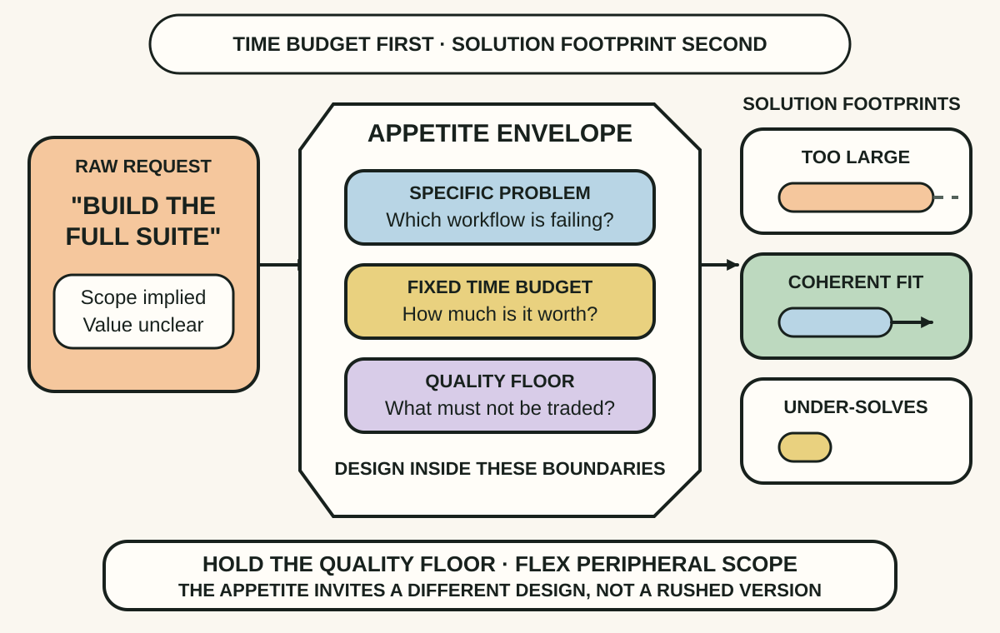
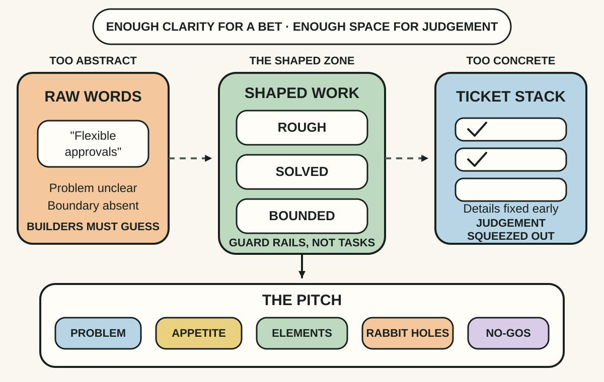
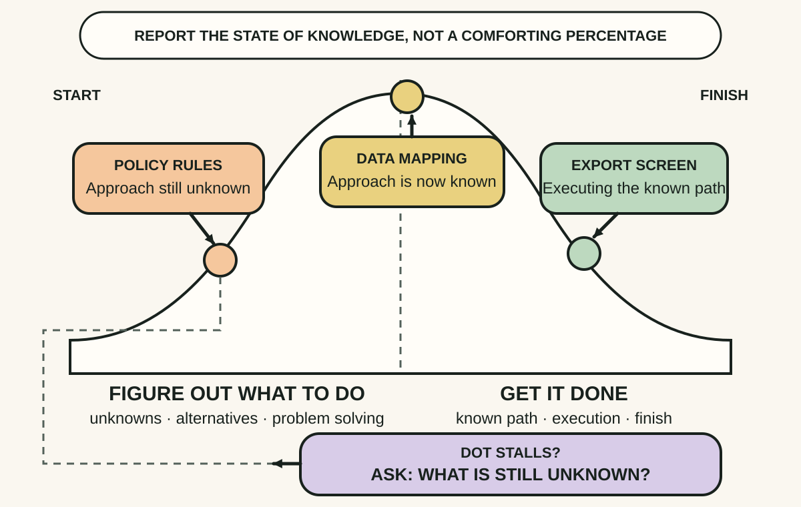

Daily lesson ·
Shape Up
Turn raw product requests into bounded bets: set the time appetite before the solution, shape enough to remove dangerous unknowns without prescribing every task, and report progress by what has become known.
Idea 1
Set the appetite before designing the scope #
The idea
Singer distinguishes an appetite from an estimate. An estimate starts with a proposed solution and predicts how long it may take. An appetite starts with how much time and attention the problem deserves, then uses that budget as a constraint for shaping a solution.
This reverses the normal conversation. Instead of treating every requested feature as fixed and moving the deadline, the team fixes time and varies peripheral scope. The time limit creates pressure to find the smallest coherent solution, protect the quality floor and leave lower-value detail out.

Why it matters
Teams often spend heavily estimating a solution before deciding what the problem is worth. An explicit appetite reveals whether the conversation is about a small repair or a substantial bet and invites a different design while change is still cheap.
Apply it today
Choose one raw request. Write the user situation that is failing and the maximum team time it deserves before discussing features.
Sketch one solution that fits that appetite. Name one quality condition that cannot move and two peripheral details that can be left out.
Caveat or failure mode
Fixed time does not make uncertain work predictable, and variable scope is unsafe when compliance, accessibility, security or data integrity is treated as optional. Six weeks is Basecamp's practice, not a universal constant. Keep genuine quality floors explicit and use spikes, staged delivery or another control when the core risk cannot fit the appetite.
Idea 2
Make shaped work rough, solved and bounded #
The idea
Singer places shaped work between two unhelpful extremes. A few abstract words leave builders guessing what problem and boundary were intended. Polished screens and exhaustive tickets decide too much too early and leave little room for designers and programmers to respond to what they discover.
Well-shaped work is rough enough to invite judgement, solved enough that its main elements connect, and bounded enough to say where to stop. Shapers inspect technical, design and dependency rabbit holes before commitment, then write a pitch containing the problem, appetite, solution outline, major risks and explicit no-gos.

Why it matters
The largest delivery risks often exist before a task list can name them: a hard interaction, an untested dependency or a solution that cannot fit the budget. Shaping surfaces those risks without pretending that all implementation work is knowable in advance.
Apply it today
Take one candidate item and write five headings: problem, appetite, solution outline, rabbit holes and no-gos.
If the solution is only a slogan, add its main elements. If it dictates screens or tasks, remove detail until the builders still have meaningful choices.
Caveat or failure mode
A small shaping group can miss user, operational, accessibility or security knowledge, and roughness can become vagueness when boundaries are weak. Bring the relevant expertise into risk review, preserve discovery where the problem itself is uncertain and do not use a confident pitch to hide dissent.
Idea 3
Track what is unknown, known and done #
The idea
Singer argues that completed-task counts can misstate progress because real work reveals new tasks. Two items with the same time estimate can also have radically different uncertainty: one is familiar execution, while the other still lacks a viable approach.
A hill chart separates figuring out what to do from getting it done. A scope moves uphill while the team resolves unknowns, crosses the top when the approach becomes clear, then moves downhill through execution. A dot that remains uphill across updates makes hidden uncertainty discussable without pretending to know a percentage complete.

Why it matters
A nearly empty task list can mean almost finished or simply not yet understood. Naming the uncertainty state helps leaders direct assistance to the stuck scope instead of asking for a confident percentage that the evidence cannot support.
Apply it today
Choose one active project and divide it into two or three independently meaningful scopes rather than roles or technical layers.
Place each scope as unknown, becoming known or executing. For the least-moving scope, write the question that must be answered to cross the hill.
Caveat or failure mode
Hill position is a subjective team judgement, not a forecast, performance score or substitute for working software, user evidence and quality checks. It depends on coherent scope boundaries and psychological safety. A team that fears exposing uncertainty may move dots optimistically instead of raising risk.
Knowledge check · 6 questions
Learning check
Answer all 6, then check your answers. Your first result stays in this browser, and each explanation appears after you check. A 3-question review can appear on the homepage from tomorrow.
6 questions not yet answered.
Today's experiment · 10 minutes
Shape one raw request into a bounded mini-pitch
- Choose one request and write the specific user situation that is failing, without copying the requested solution.
- Set a team-and-time appetite plus one quality condition that cannot be traded away.
- Sketch three main solution elements, one rabbit hole and one explicit no-go.
- Name one delivery scope, place it on the uncertainty hill and write the question that would move it over the crest.
Observable result: You finish with a compact, inspectable pitch that another person can challenge before the work becomes a commitment.
Retrieval practice
Spaced recall
- From Designing Data-Intensive Applications: which workload and guarantee would most constrain the appetite for a proposed data feature?
- From The Art of Game Design: what observable player evidence would test whether a shaped interaction produces the intended experience?
Verification
Source notes
These links support the attributed claims and edition details; applications and extensions are labelled in the lesson.
- Basecamp: Shape Up complete web book and contents
- Basecamp: Shape Up introduction and scope of the method
- Basecamp: principles of shaping
- Basecamp: setting appetite and fixed time, variable scope
- Basecamp: risks and rabbit holes
- Basecamp: hill charts and progress through uncertainty
- Basecamp: adapting principles to team size
- Open Library: Shape Up 2019 web edition record
One-sentence takeaway